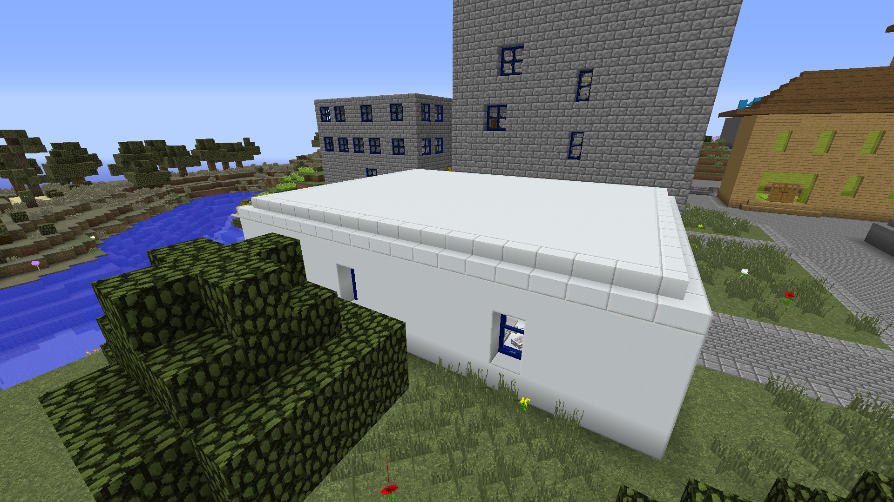
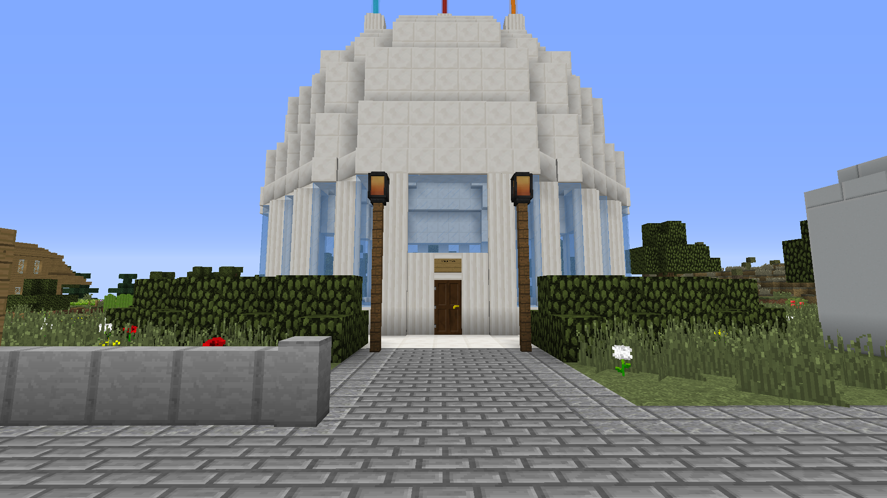
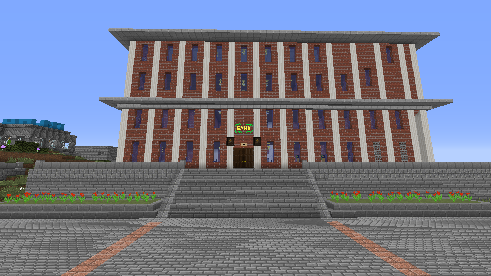
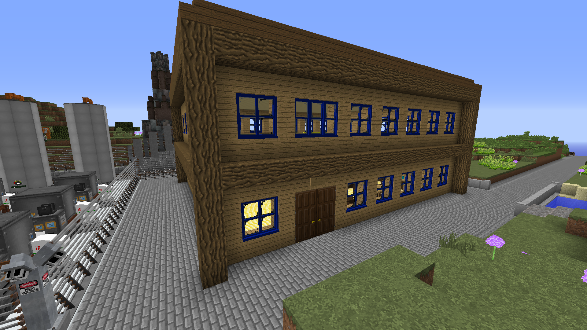
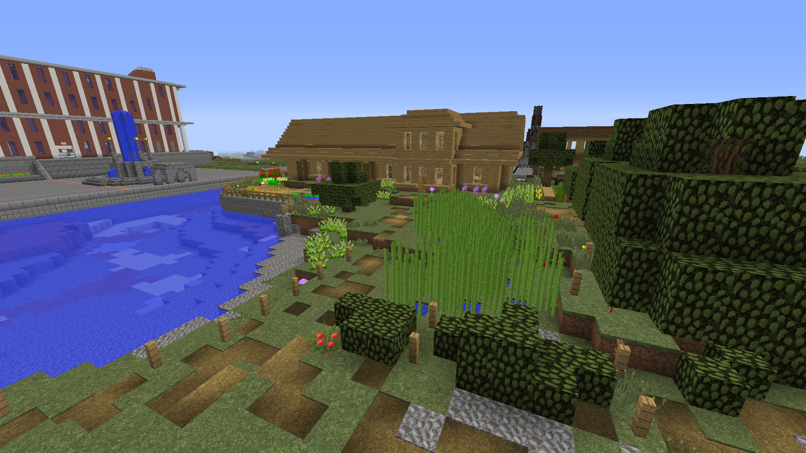
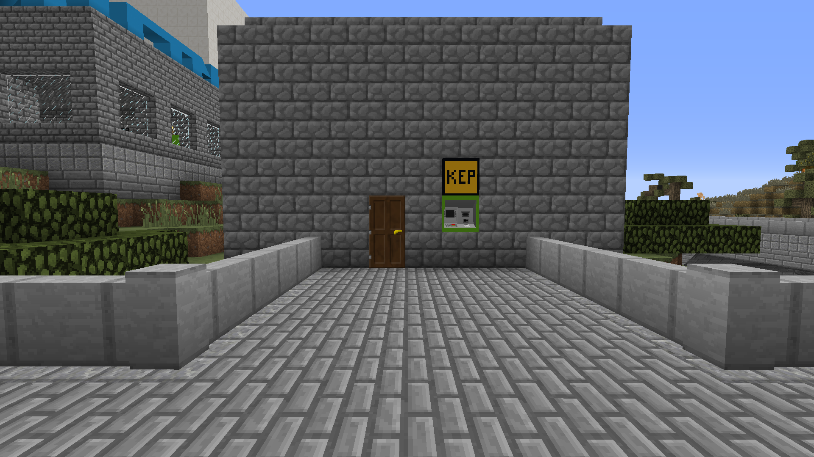
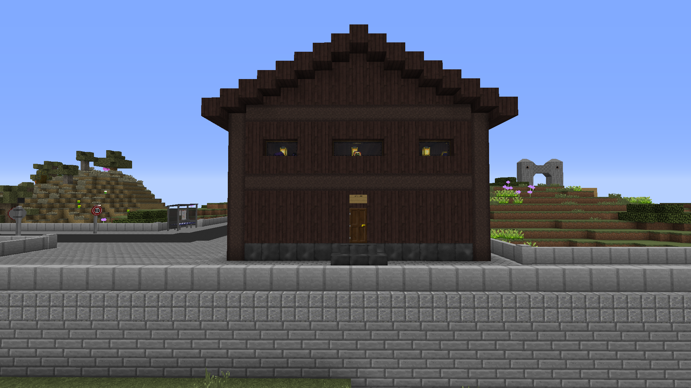
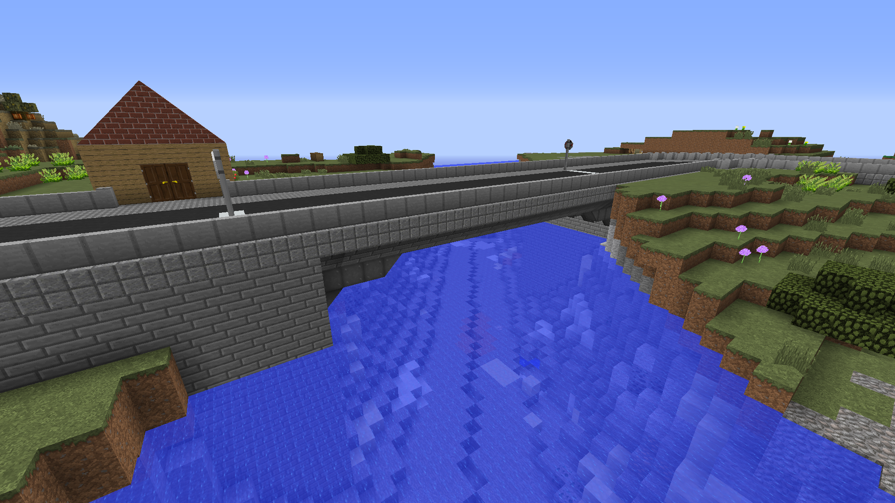
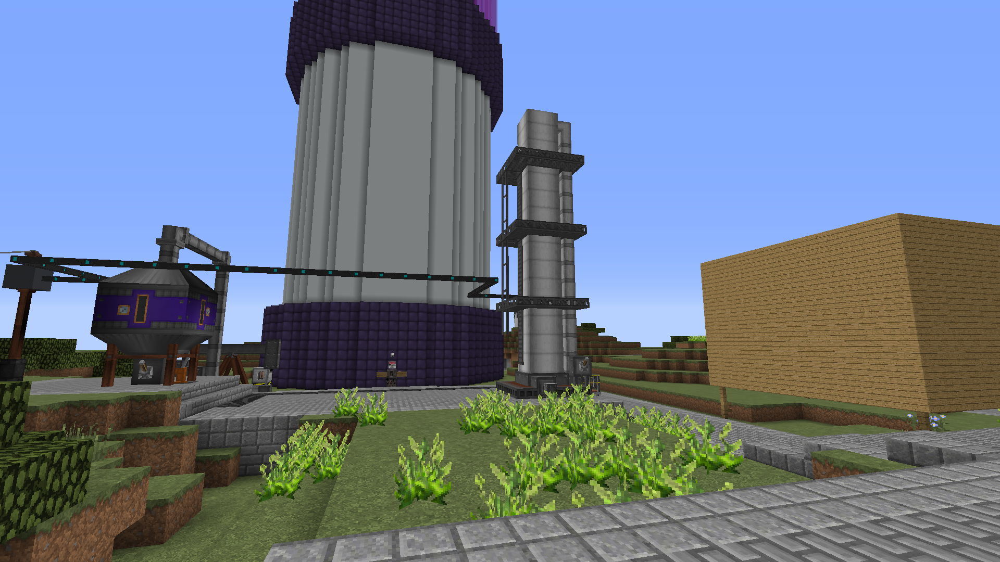

Деревня Томатомайна
В центре района находится населённый пункт, где находится большая часть инфраструктуры.
Здесь находятся жилые дома, больница, банк, ресторан, магазин и даже музей.
Через деревню протекает искусственный канал, прорытый для связи между лабораториями КСК и ТСК.
На северном берегу канала находится промзона.

Больница и жилые дома

Здание Союза трёх лабораторий

Томатомайновский филиал Центробанка Кукумбера

Местный ресторан

Дом сударя Mr_TT

Магазин

Музей

Один из двух разводных мостов над каналом

Промзона. Сзади - плазменная установка КСК
Вернуться на главную страницу